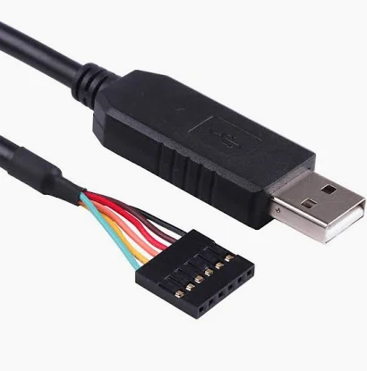

Arduino Setup Guide¶
This guide will help you set up the Arduino IDE and prepare your computer for programming your Riverlabs logger.
What is Arduino?¶
Arduino is a fantastic open source hardware ecosystem centered around the Arduino IDE - a user-friendly software development environment for writing code that runs on embedded processors like those in Riverlabs loggers.
The Arduino team developed a special bootloader that allows you to connect Arduino-compatible boards to your computer without needing specialized hardware programmers. Your Riverlabs logger comes with this bootloader pre-installed.
New to Arduino?
If you want to learn more about Arduino, consider buying one of the many Arduino boards from Arduino.cc, Sparkfun, or Adafruit. The Arduino website has excellent tutorials and documentation.
Step 1: Install Arduino IDE¶
- Visit the Arduino Software page
- Download the Arduino IDE for your operating system (Windows, macOS, or Linux)
- Run the installer and follow the installation instructions
- Launch the Arduino IDE once installation is complete
Step 2: Install Required Libraries¶
Your Riverlabs logger requires several external libraries. Most can be installed through the Arduino Library Manager:
Install via Library Manager¶
- Open Arduino IDE
- Go to Sketch → Include Library → Manage Libraries
- Search for and install each of these libraries:
- RTC by Makuna - Real-time clock control
- SoftwareSerial - Software serial communication (for cellular models)
- SdFat by Bill Greiman - SD card file system
- AltSoftSerial - Alternative software serial (for cellular/lidar models)
SdFat Version
Make sure to install the original SdFat library by Bill Greiman. If multiple versions appear in the search, select the one authored by Bill Greiman.
Manual Installation: Rocketscream LowPower¶
The Rocketscream LowPower library is not available in the Library Manager and must be installed manually:
- Download the library from the Github repository
- Click the green Code button and select Download ZIP
- Extract the ZIP file
- Move the extracted folder to your Arduino libraries directory:
- Windows:
Documents\Arduino\libraries\ - macOS:
~/Documents/Arduino/libraries/ - Linux:
~/Arduino/libraries/ - Restart the Arduino IDE
Library Installation Help
For detailed instructions on manual library installation, see the Arduino Library Guide.
Step 3: Get an FTDI Cable¶
Riverlabs loggers don't have a USB port - they use a serial interface instead. You'll need a USB to Serial (TTL level) converter, commonly called an FTDI cable or FTDI board.
Recommended Options:
- FTDI Cable - Direct USB connection (Sparkfun FTDI Cable)
- FTDI Breakout Board - Small board requiring micro-USB cable (Sparkfun FTDI Basic)
Voltage Selection:
FTDI cables come in 3.3V or 5V versions. Riverlabs loggers work with both, but 3.3V is recommended.

FTDI cable showing the 6-pin connector with color-coded wiresInstall FTDI Drivers¶
After purchasing your FTDI cable/board, you'll need to install drivers:
- Visit the Sparkfun FTDI Driver Tutorial
- Follow the instructions for your operating system
- Restart your computer after installation
- Connect your FTDI cable and verify it appears as a serial port in Arduino IDE (Tools → Port)
Step 4: Configure Arduino IDE for Riverlabs Loggers¶
Before uploading code, you must configure the Arduino IDE with the correct board settings:
Board Settings¶
- Open the Arduino IDE
- Go to Tools → Board and select Arduino Pro or Pro Mini
- Go to Tools → Processor and select ATmega328P (3.3V, 8MHz)
Critical Setting
The processor MUST be set to ATmega328P (3.3V, 8MHz). Using the wrong setting (like 5V, 16MHz) will cause upload failures or runtime issues.
Select the Port¶
Once you've connected your FTDI cable to your computer:
- Go to Tools → Port
- Select the port that appears after connecting the FTDI cable
- Port names vary by operating system:
- macOS:
/dev/cu.usbserial-XXXXXXXX - Linux:
/dev/ttyUSB0or/dev/ttyACM0 - Windows:
COM3,COM4, etc.
If no port appears, check that FTDI drivers are properly installed.
Understanding the Arduino IDE¶
The Arduino IDE has a straightforward interface:
Main Components:
- Editor Window (top) - Where you write and edit your code
- Information Window (bottom) - Shows compilation output, upload progress, and errors
- Toolbar (top) - Quick access buttons for common actions
- Tools Menu - Board settings, port selection, and other configuration options
Important Toolbar Buttons:
- ✓ Verify - Compiles your code to check for errors
- → Upload - Compiles and uploads code to your logger
- Serial Monitor - View real-time serial output from your logger
Arduino Language
Arduino uses a language very similar to C++. Each program (called a "sketch") has two main functions:
setup()- Runs once when the logger powers onloop()- Runs repeatedly while the logger is powered
Next Steps¶
Now that you have Arduino set up, you're ready to program your logger:
- Quick Start Guide - Complete setup workflow
- Uploading Code - Detailed upload instructions with troubleshooting
- Logger Identification - Find the right code for your logger model
Troubleshooting¶
Problem: No port appears in Tools → Port
- Verify FTDI drivers are installed correctly
- Try a different USB port on your computer
- Try restarting your computer
- Test with a different USB cable (if using breakout board)
Problem: "Board not found" error during upload
- Check FTDI cable orientation (GRN/BLK markings)
- Ensure sensor is disconnected (white connector)
- Verify correct board settings (ATmega328P, 3.3V, 8MHz)
- Try pressing the reset button on the logger just before uploading
Problem: Libraries won't install
- Make sure you have an internet connection
- Try closing and reopening the Library Manager
- For manual installation, verify the folder is in the correct libraries directory
- Restart Arduino IDE after installing libraries
Related Resources¶
- Arduino Official Documentation
- Sparkfun FTDI Tutorial
- Common Issues - Programming troubleshooting